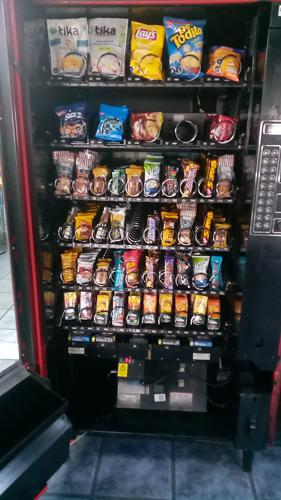
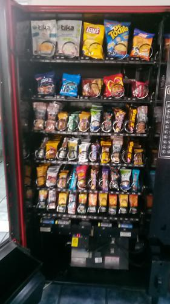

Antes de AbastecerNo se detectaron espirales vacios.

id 412.993 |
Luego de AbastecerNo se detectaron espirales vacios.

id 412.994 |
|
| Fecha |
Reporte |
Vacios ANT |
% Abast |
% Quiebre |
Sum QTY |
Rotación Diaria |
Abast hace (días) |
| 16-08-2021 |
Viendo |
0 |
3.1 |
- |
26 |
5 |
5 |
| 11-08-2021 |
Ver |
0 |
7.3 |
- |
62 |
31 |
2 |
| 09-08-2021 |
Ver |
0 |
3.5 |
- |
30 |
6 |
5 |
| 04-08-2021 |
Ver |
0 |
5.3 |
- |
45 |
22 |
2 |
| 02-08-2021 |
Ver |
0 |
4.0 |
- |
34 |
6 |
5 |
| 28-07-2021 |
Ver |
0 |
4.6 |
- |
39 |
19 |
2 |
|
|
|
Se abasteció la máquina con:
Total de 26 unidades de 3 productos.
| Qty. |
Producto |
SubFamilia |
Familia |
| 10 |
Tuareg Coco Indiv. 24X48 |
Galletas |
Snack |
| 10 |
Galleta Conquista 45 Gr |
Galletas |
Snack |
| 6 |
Andifrut Durazno Tetra 20 |
Jugos |
Tetras |
| Productos más abastecidos en últimas 6 semanas:
| Nro. Abast |
Qty/Abast |
Producto |
Abast hace (días) |
Fecha |
| 14 |
4 |
Brownie Nutrabien Display |
5 |
11-08-2021 |
| 9 |
7 |
Tuareg Coco Indiv. 24X48 |
0 |
16-08-2021 |
| 8 |
11 |
Chocolate Winergy 58Grs |
7 |
09-08-2021 |
| 6 |
8 |
Mizos Chocolate Naranja |
26 |
21-07-2021 |
| 5 |
10 |
Negrita 20 Gr |
12 |
04-08-2021 |
| Productos menos abastecidos en últimas 6 semanas:
| Nro. Abast |
Qty/Abast |
Producto |
Abast hace (días) |
Fecha |
| 1 |
6 |
Andifrut Durazno Tetra 20 |
0 |
16-08-2021 |
| 1 |
10 |
Galleta Conquista 45 Gr |
0 |
16-08-2021 |
| 1 |
10 |
Alfajor Chileno 45G 24U |
12 |
04-08-2021 |
| 1 |
20 |
Almendras Naturales Las M |
5 |
11-08-2021 |
| 2 |
1 |
Mini Selz 45 Gr |
42 |
05-07-2021 |
|
|